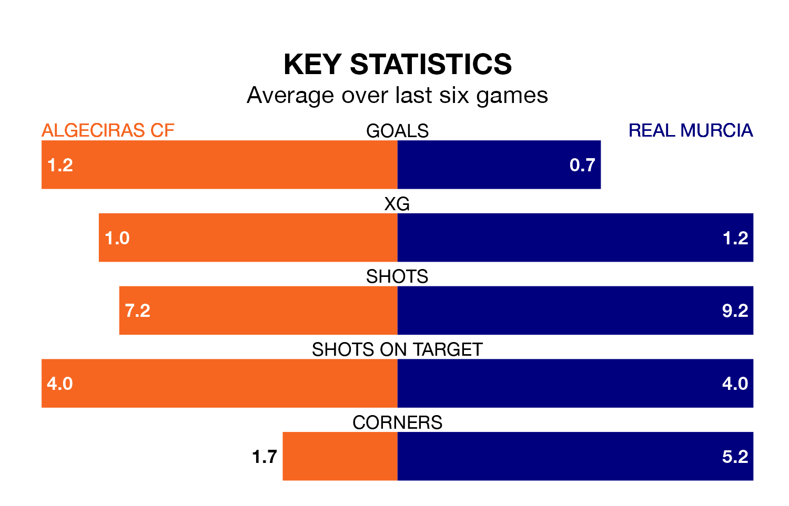

Real Murcia travel to Algeciras CF on late Sunday in Primera Division RFEF Group 2.
The visitors come into the game on the back of a win in their last match, having beaten Granada B 1-0 at home, with a goal from José Ángel Carrillo Casamayor.
Algeciras, meanwhile, lost their last match, 3-2 against Ceuta, with their goals scored by Diego Esteban Pérez and Javier López Pinto Dorado.
With Manuel García Humanes between the sticks, Murcia can rely on one of the league's safest pair of hands. He has kept 10 clean sheets in his 19 appearances this season, and only one other 'keeper – Recreativo de Huelva's Rubén Ramos González – has been able to prevent the opposition scoring on more occasions in Primera Division RFEF Group 2.
In Algeciras's net, Luis Alberto García Pacheco has five clean sheets in 18 games.
With 28 goals in 30 games so far this season, the visitors are scoring at below the league average rate with 0.9 goals per game. But they are conceding fewer than average too, letting in 31 goals at a rate of 1.0 per game.
The home side, meanwhile, are average scorers, with 1.1 goals per game. They have conceded 0.9 goals per game.
Murcia are seventh in the table after 30 games, of which they have won 12 and drawn eight, earning 44 points.
Algeciras are one place behind Murcia in eighth, with 10 wins and 12 draws putting them on 42 points.
Algeciras are in mixed form in Primera Division RFEF Group 2, with one win and four draws from their last six games.
With three wins and a draw over that period, the away team's form is better – they have taken 10 points from 18, compared to the hosts' seven.
Updated: 16:41 (UTC), 04/04/24